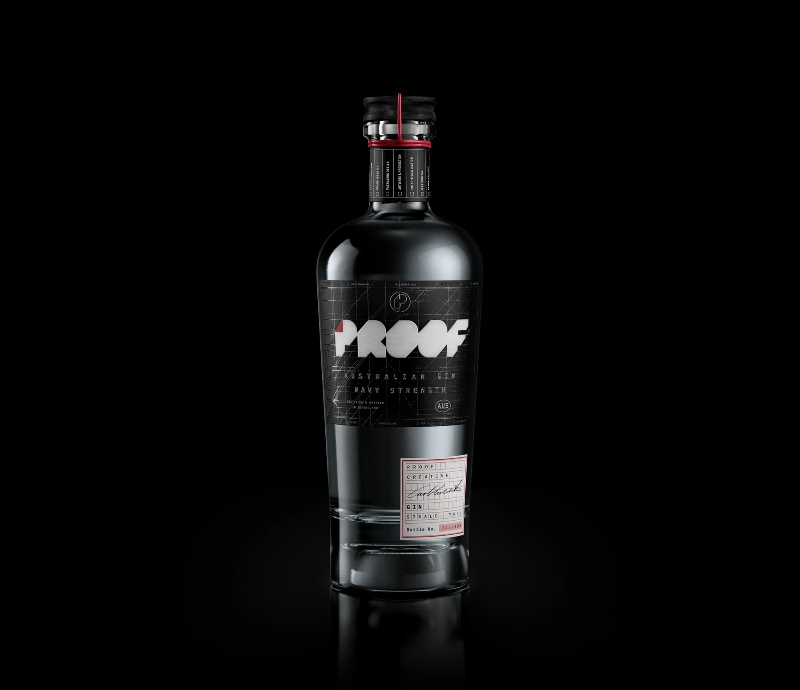
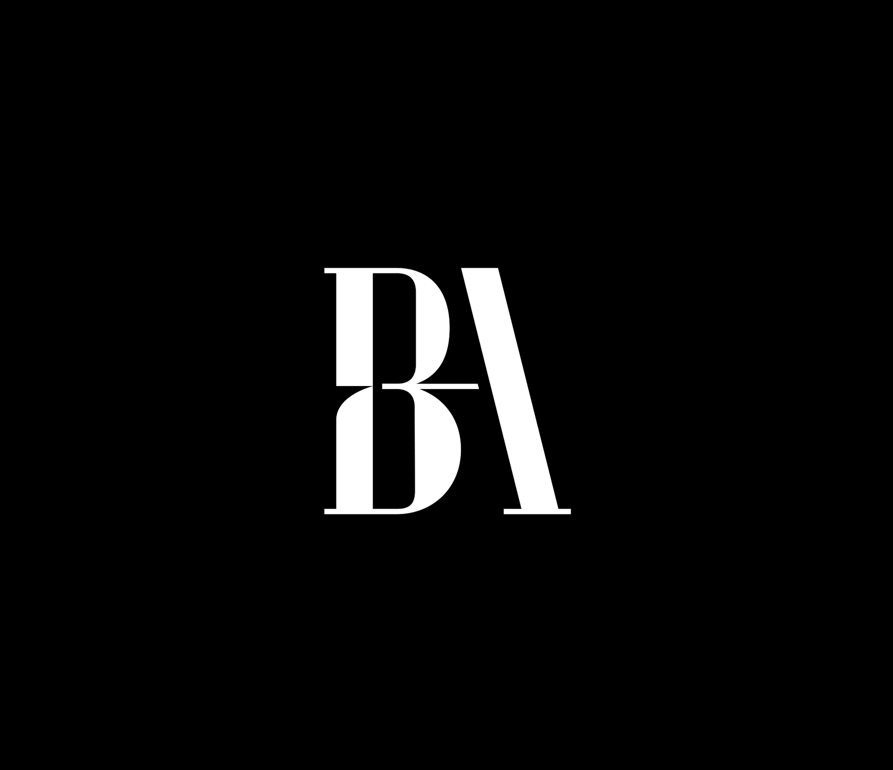
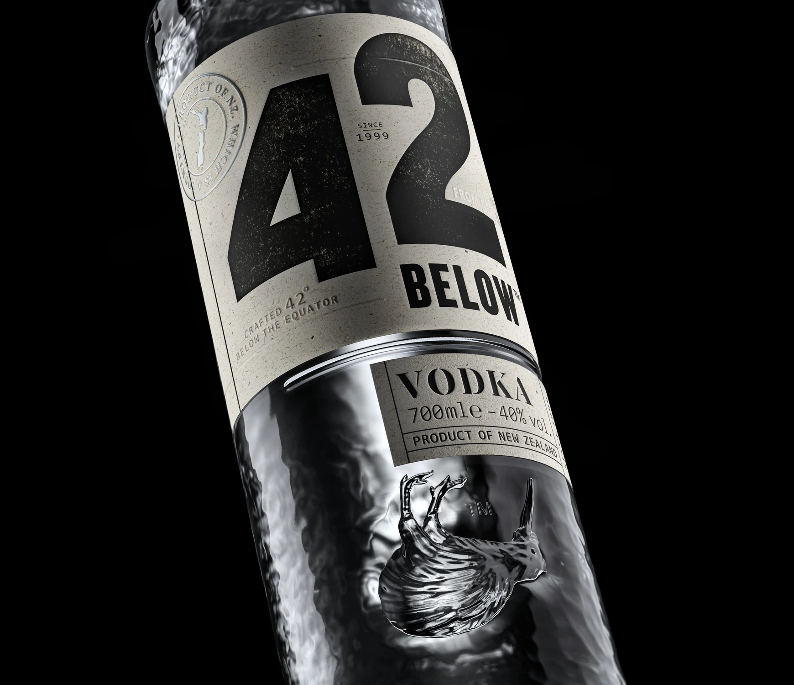
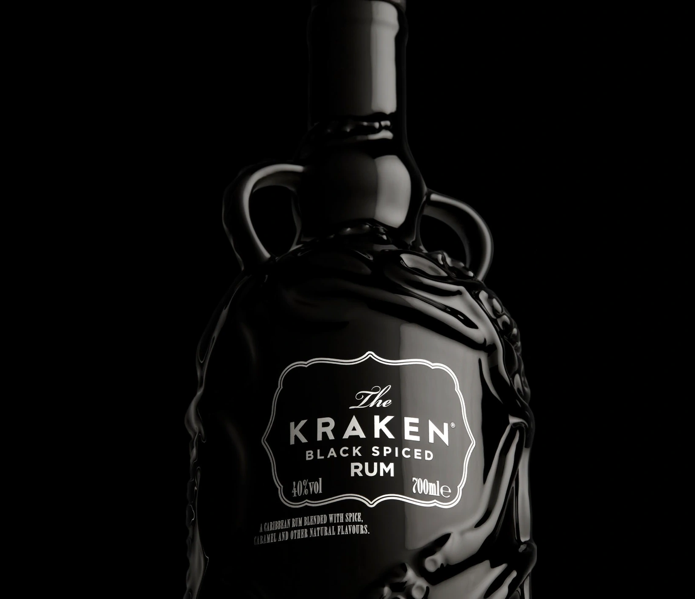

01 / 11Proof CreativeBrand identity & packaging
The studio identity, expressed through packaging. The angular Proof mark, red accents and fine construction lines carry through the bottle and label. An exploration of how a visual identity becomes a physical object.
Featured work by Proof Creative.

02 / 11Proof CreativeBrand identity / Architecture
A refined BA monogram, a customised wordmark and a considered identity system for an architectural practice.
Brand identity by Proof Creative.
 03 / 11
03 / 11Proof CreativeBrand Identity
A complete brand identity for a Brisbane surveying practice – precise, confident and built to work everywhere from site signage to spatial reports.
 04 / 11
04 / 11At Stranger & StrangerProduction Design
Isle of Harris Gin is infused with hand-harvested sugar kelp from the Outer Hebrides. The brief called for a label that told the sourcing story before a word was read – a paper as authentic and native to the island as the botanical inside the bottle.
My role: production design, completed whilst at Stranger & Stranger.
 05 / 11
05 / 11At Stranger & StrangerProduction Design
Celebrating Stranger & Stranger’s 10th anniversary of collaboration with Compass Box Whisky Company – a visually arresting pack built around a previously untested label stock.
My role: production design, completed whilst at Stranger & Stranger.
 06 / 11
06 / 11At Stranger & StrangerProduction Design
Don Papa MassKara is steeped in the riot of colour and detail of the Philippines’ iconic MassKara Festival. The brief: carry that intricacy through to print without losing a line of it.
My role: production design, completed whilst at Stranger & Stranger.

07 / 11At Stranger & StrangerProduction Manager
A Kiwi icon reimagined. For 42 Below’s redesign, the creative concept lived or died in the glass itself – a new bottle structure with an embossed kiwi, carried from CAD through to production alongside a full print and finishing spec.
My role: production management, completed whilst at Stranger & Stranger.
 08 / 11
08 / 11At Stranger & StrangerProduction Design
Deoleo's largest-ever rebrand: one global design across every market, still locally relevant in each – with 160 years of heritage intact.
My role: production design, completed whilst at Stranger & Stranger.
 09 / 11
09 / 11At Stranger & StrangerProduction Design
A full-range rebrand rolled out across every SKU at once – consistent on shelf, right-first-time in production.
My role: production design, completed whilst at Stranger & Stranger.
 10 / 11
10 / 11At Stranger & StrangerProduction Design & Brand Asset Management
The Kraken’s core range is the brand’s most recognisable pack – the embossed apothecary bottle with its twin handles. The work was carrying that single design across every bottle size, its primary and secondary packaging, and a widening set of touchpoints that all had to match.
My role: production design & brand asset management, completed whilst at Stranger & Stranger.

11 / 11At Stranger & StrangerProduction Design
A limited edition of The Kraken’s spiced rum in a Wade ceramic decanter. The bottle was already well known – apothecary shape, twin handles – but moving its artwork onto fired ceramic meant rebuilding the decoration around a firing schedule instead of a print run.
My role: production design, completed whilst at Stranger & Stranger.